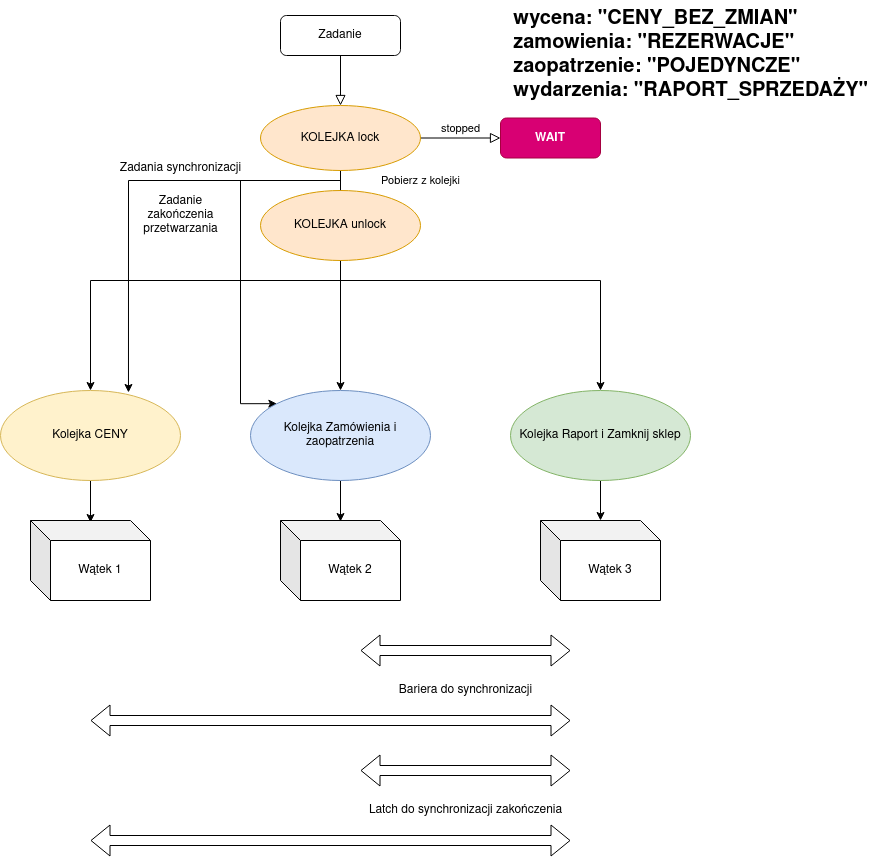
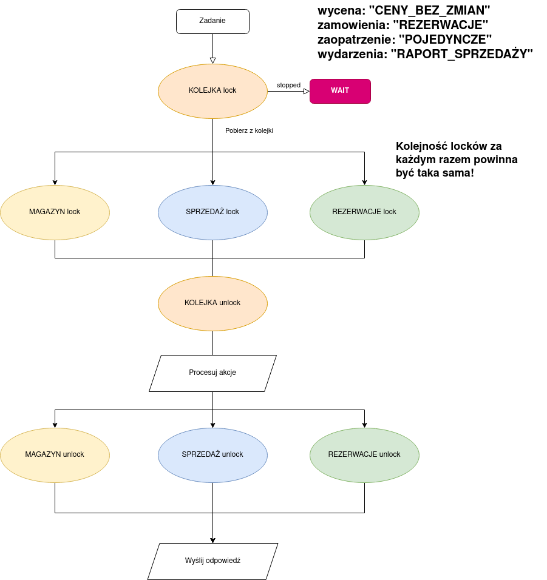
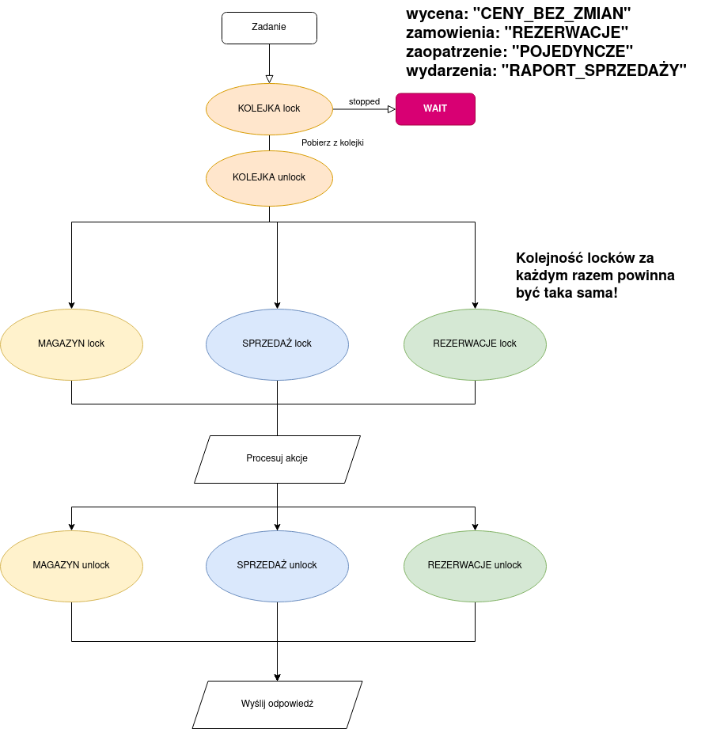
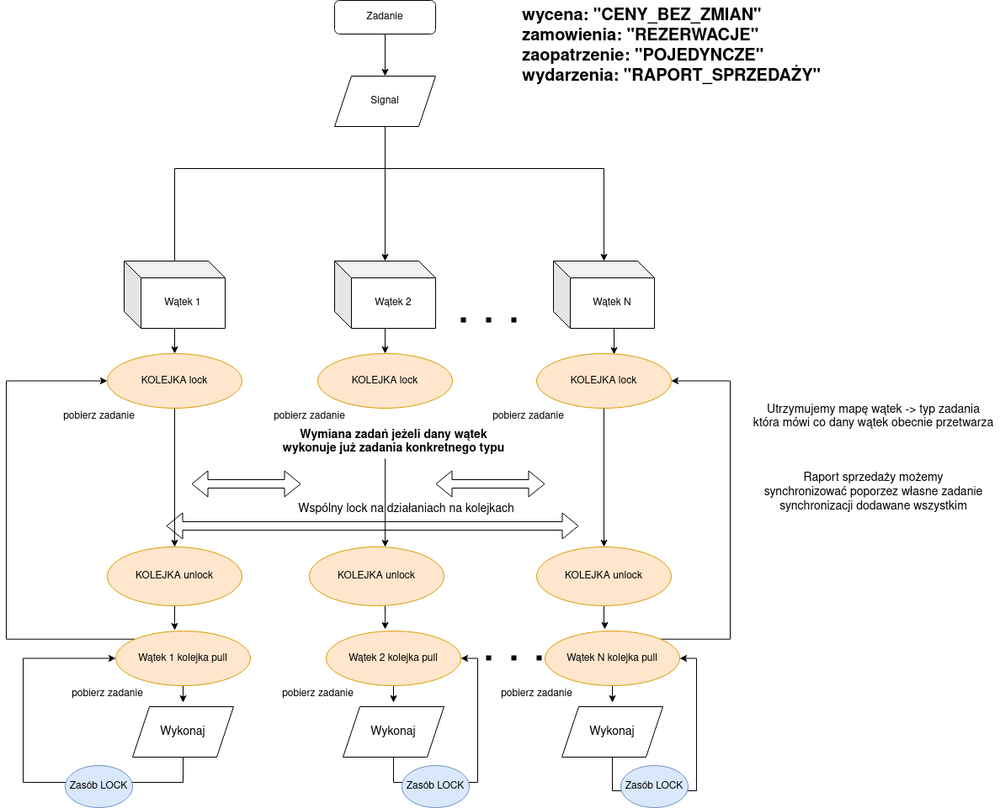
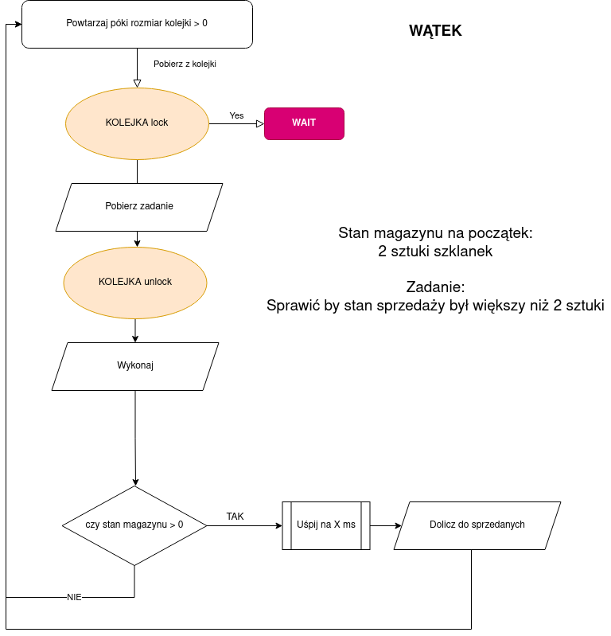

Zamek - Lock, umożliwiający zamykanie lock i otwieranie unclock, wątki czekają na zasób i są wznawiane w nieznanej nam kolejnościZamek - Lock, z metodą tryLock która przepuszcza działanie dalej jeżeli w danym momencie zasób jest dla nas niedostępnyZamek ReadWrite - ReadWriteLock, umożliwiający zamykanie lock i otwieranie unclock, oraz podział operacji na odczyty i zapisy, wątki czekają na zasób i są wznawiane w nieznanej nam kolejnościCondition - związane z zamkiem umożliwiające czekanie na metodzie await() oraz wznawianie przez metodę signal() lub signalAll()Semafor - blokada umożliwiająca przejście więcej niż jednemu wątkowi, Lock jest przykładem semafora binarnegoZmienne atomowe - synchronizowane zmienne, których wartość może sterować przetwarzaniemSynchronizowane kolekcje - listy, mapy, zbiory, na których operacje wielowątkowe sa bezpieczne.BlockingQueue - kolejka która blokuje wątek gdy nie ma elementów do pobraniaLicznik - Latch, umożliwiający zliczanie wątków przez countDown() oraz czekanie na przyjście X wątków na metodzie await(), nie można użyć o wielokrotnie.Bariera - cykliczny licznik zatrzymujący wątki poprzez wykonanie await() i przepuszczający po przyjściu X wątków, następnie restartujący się od początku.
Podejście oparte na tworzeniu niezależnych kolejek dla zadań, które na siebie nie wpływają, oraz tworzenia specjalnych zadań dla synchronizacji:

Zalety:
Bardzo proste w implementacji.Uzyskanie sekwencyjnego wykonania przez podział sekwencyjnego wywołania w miarę możliwości na podgrupy.
Wady:
Ograniczona liczba wątków, jeden na kolejkę. Co zrobić jak kolejek jest więcej niż wątków?Nie przenosi się na działanie niesekwencyjne.
Podejście oparte na blokowaniu zasobów w sposób taki, żeby wątki na raz nie zmieniały wartości, z których korzystają inne wątki

Zalety:
Raport sprzedaży i zaopatrzenie mogą się wykonać jednocześnie.Uzyskanie sekwencyjnego wykonania przez dodanie zamku na kolejce - kolejne zadanie nie dopuszcza nikogo do wykonywania operacji na zasobach dopóki same nie dostanie odpowiednich zasobów.
Wady:
W przypadku dwóch zadań o sprzedaży i wielu o podanie ceny, zadania o sprzedaży blokują zadania z cenami, choć nie powinny.Co zrobić żeby móc działać niesekwencyjnie a rozwiązanie cały czas było poprawne?
Pytanie :
Co stanie się, gdy będziemy blokować zasoby poza kolejką?

Co może pójśc nie tak?
Jak zapewnić by zadania o sprzedaży nie blokowały zadań innych? Czy opcja pierwsza może nam pomóc w rozwiązaniu problemu?
W podejściu niesekwencyjnym. Zakładamy, że chcemy zamówienia rozpatrywać w kolejności, ale zaopatrzenia możemy rozpatrywać jak chcemy. Raporty i inwentaryzacje nadal chcemy wykonywać synchronizując stan na dany moment czasu. Możemy też pokusić się o synchronizację danych typów towarów a nie całego magazynu w przypadku zamówień.
Propozycja: przydział kolejek zadań do wątków, tak by one wzajemnie przyznawały zadania w zależnośći od sytuacji. Daje to nam możliwość skalowalności liczby wątków na dowolną liczbę i zmieniające się warunki jak chodzi o nowe typy zadan i zaleźnośći.

Jedna godzina 15.30 w poniedziałek 09.05.2022, podział na dwie grupy, zaliczenie po 45 min.
a) Test - pytanie testowe z "teorii", przypadki - jaki będzie wynik działania kodu lub wykazanie przypadków kiedy zadane rozwiązanie nie działa, podanie w których przypadkach przedstawione w pseudokodzie rozwiązanie zadziała, a kiedy nie
Przykład:
Wskaż prawdziwe zdania:
* Latch jako blokada może być wykorzystywany wielokrotnie* Bariera jako blokada może być wykorzystywana wielokrotnie* Bariera umożliwia synchronizację wielu wątków* Latch umożliwia synchronizację wielu wątkówb) Implementacja zadania w języku Java :
Zmodyfikowana wersja poprzedniego zadania nr 1 bez ograniczenia o synchroniczności, z nowymi elementami, więcej produktów, zakupy i zaopatrzenie wielu produktów na raz.
c) Podanie kontrprzykładów (na zajęciach) albo odpowiedź, że zadana implementacja zawsze zadziała.
Zadanie(TYP, wartość_parametru (opcjonalnie), czas_uśpienia (w milisek));
Np przykład:
new Zadanie(TYP, 5, 1000);
lub
Zadanie.builder().item(Items.SZKLANKA)
.parameter(5)
.sleep(1000)
.build()Pusta lista na odpowiedź że działa. 5 scenariuszy po 5 prób, 4% za każdą próbę.
Przykład:
Kod:
ConcurrentHashMap<Items, Integer> warehouse = new ConcurrentHashMap();
AtomicLong sold = new AtomicLong(0L);
BlockingQueue<Zadanie> kolejka;
public ShopZadanie(BlockingQueue<Zadanie> kolejka) {
this.kolejka = kolejka;
warehouse.put(Items.SZKLANKA, 2);
}
public void wykonaj(Zadanie zadanie) {
if(warehouse.get(zadanie.item) > 0) {
try {
Thread.sleep(zadanie.sleep);
} catch (InterruptedException e) {
e.printStackTrace();
}
sold.incrementAndGet();
}
}
public void uruchom() {
Lock zamek = new ReentrantLock();
// Wszystkie wątki działają w taki sam sposób
Thread thread1 = new Thread(() -> {
zamek.lock();
while(kolejka.size() > 0) {
Zadanie zadanie = kolejka.poll();
zamek.unlock();
wykonaj(zadanie);
zamek.lock();
}
zamek.unlock();
});
Thread thread2 = new Thread(() -> {
zamek.lock();
while(kolejka.size() > 0) {
Zadanie zadanie = kolejka.poll();
zamek.unlock();
wykonaj(zadanie);
zamek.lock();
}
zamek.unlock();
});
Thread thread3 = new Thread(() -> {
zamek.lock();
while(kolejka.size() > 0) {
Zadanie zadanie = kolejka.poll();
zamek.unlock();
wykonaj(zadanie);
zamek.lock();
}
zamek.unlock();
});
thread1.start();
thread2.start();
thread3.start();
try {
thread1.join();
thread2.join();
thread3.join();
// Sprawdzamy czy nie sprzedano więcej niż 2 sztuk
assertThat(sold.get()).isLessThanOrEqualTo(2);
} catch (InterruptedException e) {
e.printStackTrace();
}
}Diagram:

Przykładowa odpowiedź :
kolejka.add(Zadanie.builder()
.item(Items.SZKLANKA)
.sleep(3000)
.build());
kolejka.add(Zadanie.builder()
.item(Items.SZKLANKA)
.sleep(2000)
.build());
kolejka.add(Zadanie.builder()
.item(Items.SZKLANKA)
.sleep(1000)
.build());Lub
IntStream.rangeClosed(1,3).forEach(it -> {
kolejka.add(Zadanie.builder()
.item(Items.SZKLANKA)
.sleep(1000)
.build());
});Głosowanie:
Podaj numer indkesu jako ID, imię dowolne.
Uszereguj opcje od najbardziej preferowanej do najmniej preferowanej.
Wykorzystano materiały z: